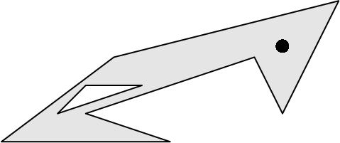
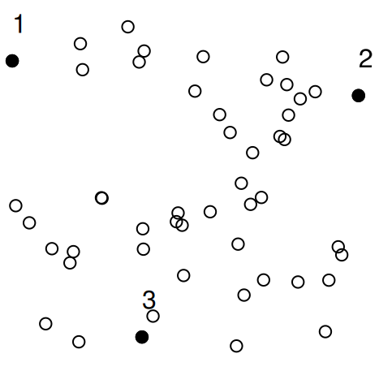
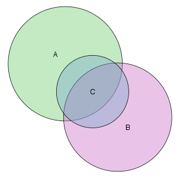
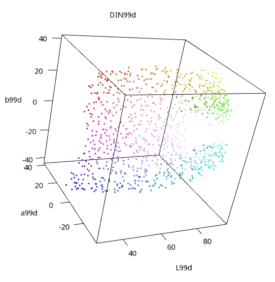

A new update to the SLOPE package with many exciting features.

A new package polylabelr can be used find visual centers of polygons and label Euler diagrams.

An algorithm for finding the most separated points in a cloud of points.

This is an introduction to my new package, eulerr, an R package that computes and plots eulerr diagrams of set relationships.

Let me introduce qualpalr: an R package that generates qualitative color palettes with distinct colors using color difference algorithms.